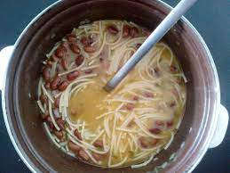

Fažol i manestra

Sastojci
- Suhi fažol
- Manestra
- Suho meso ili kosti
- Slanina
- Frig
- Kapula
- Luk
- Ulje
- Začini
- Kumpiri
Postupak
-
Načiniti pešt
- Očisti luk
- nasickati luk, frig i slaninu
- Izblendati i staviti u frižider
- Staviti fažol da kuvo
- Ka zakuvo, proliti vodu i ponovo staviti da kuvo
- Staviti meso/kosti i kapulu sa fažolun da kuvo
-
Ka se raskuvo, ubociti kumpiri iskidoni na veliki komodi ili cijeli
- Ka se kumpiri skuvaju, dodati pešt, kušervu i začiniti po želji
- Dodati manestru na kraju da se skuvo